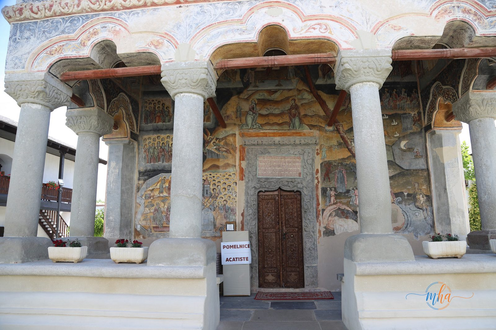
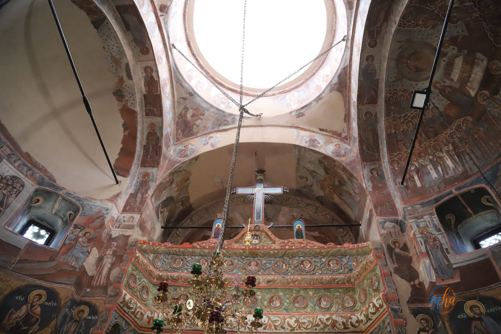
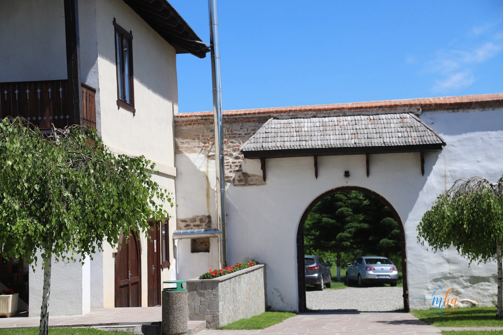
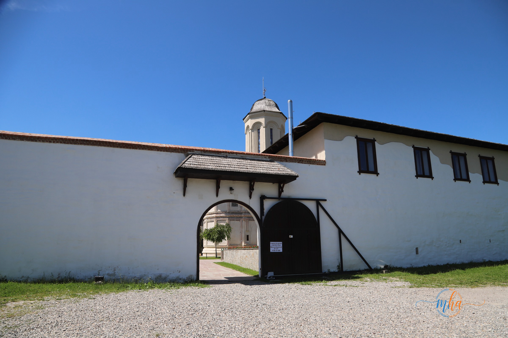
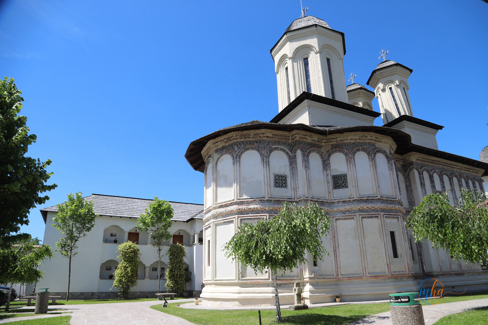
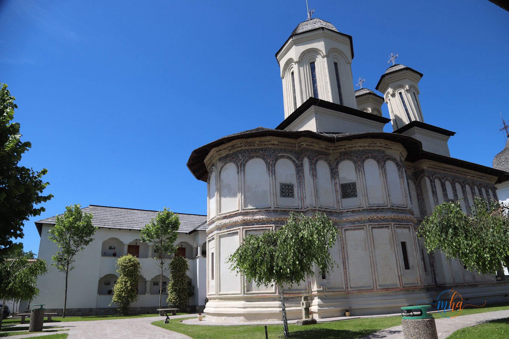
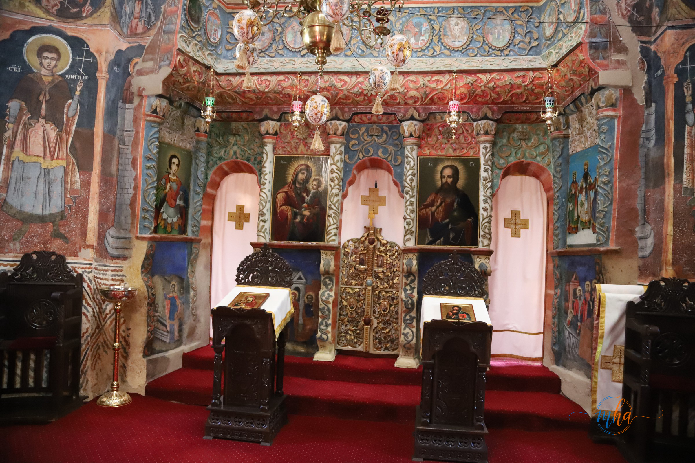
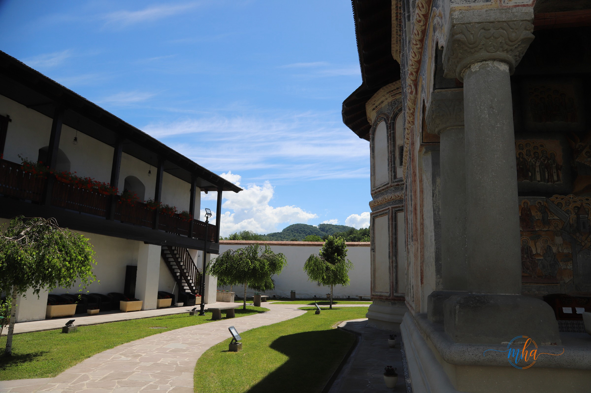
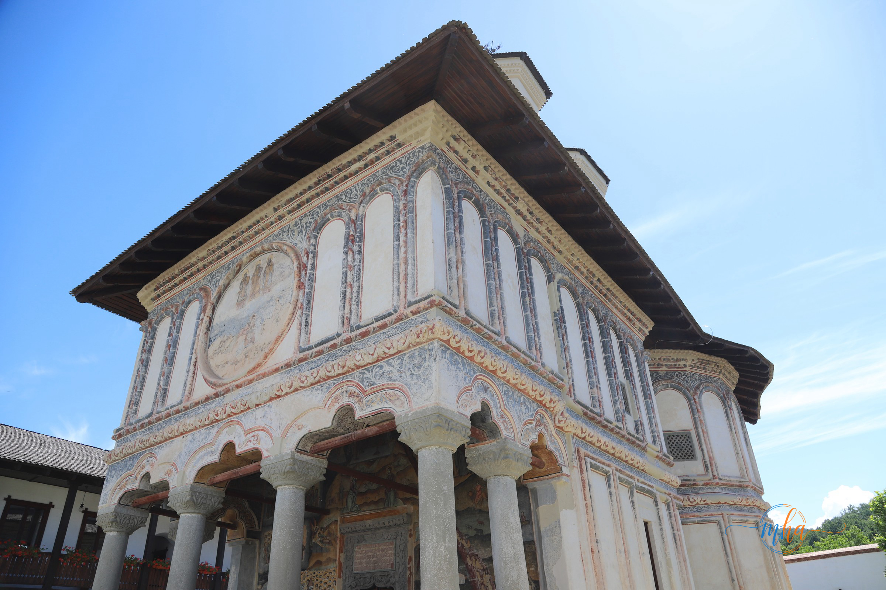
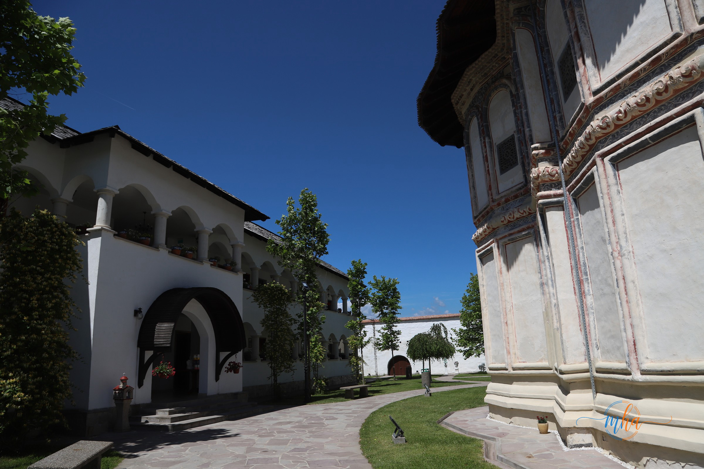

Pentru locuitorii din Mehedinți care își caută o destinație de o zi sau de weekend, nu trebuie să mergi tocmai departe ca să descoperi un colț de liniște și istorie. La doar câțiva kilometri de stațiunea Călimănești, în județul vecin Vâlcea, Mănăstirea Berislăvești se numără printre cele mai valoroase monumente istorice și religioase din sudul țării — și poate fi punctul central al unei excursii memorabile dinspre Drobeta-Turnu Severin.
Istoria Mănăstirii Berislăvești
Mănăstirea Berislăvești a fost construită între anii 1754 și 1762 de boierul Alexandru Bucșenescu și soția sa, Maria. Ctitoria a fost ridicată într-o perioadă marcată de numeroase transformări sociale și politice, devenind rapid un important centru religios pentru comunitățile din zona Vâlcii.
Încă de la început, fondatorii și-au dorit ca mănăstirea să fie mai mult decât un loc de rugăciune. Conform documentelor istorice, aici a funcționat și o școală destinată copiilor săraci, contribuind la educarea generațiilor tinere și la dezvoltarea culturală a regiunii.
De-a lungul timpului, mănăstirea a trecut prin numeroase încercări. Incendiile, conflictele armate și cutremurele puternice au afectat în repetate rânduri ansamblul monahal. Cu toate acestea, datorită lucrărilor de restaurare și eforturilor depuse pentru conservarea patrimoniului, monumentul și-a păstrat frumusețea și valoarea istorică până în zilele noastre.
Arhitectura impresionantă a ansamblului monahal
Unul dintre elementele care atrag atenția vizitatorilor este arhitectura specifică epocii brâncovenești târzii. Ansamblul este înconjurat de ziduri de apărare solide, care oferă impresia unei mici fortărețe medievale — o imagine care impresionează din prima clipă, mai ales pentru cei care vin din zone cu un alt tip de patrimoniu, precum Mehedinți.
Accesul se face printr-un turn-clopotniță impunător, care domină întregul complex. Biserica mănăstirii impresionează prin proporțiile sale armonioase, pridvorul elegant și elementele decorative sculptate cu atenție.
Interiorul păstrează picturi religioase de mare valoare artistică, iar atmosfera liniștită transformă vizita într-o experiență spirituală autentică. Mulți turiști și pelerini aleg să petreacă aici momente de reculegere și reflecție, departe de agitația cotidiană.
Pentru cei obișnuiți cu Mănăstirea Mraconia sau cu peisajele Defileului Dunării din Mehedinți, Berislăvești oferă o experiență complementară: aceeași liniște, dar într-un decor de deal și pădure specific Subcarpaților Vâlcii.
Un traseu turistic pe care îl poți combina
Județul Vâlcea este renumit pentru numeroasele sale mănăstiri și monumente istorice, iar Mănăstirea Berislăvești ocupă un loc special printre acestea. Amplasarea sa într-o zonă cu peisaje spectaculoase oferă vizitatorilor posibilitatea de a descoperi atât patrimoniul religios, cât și frumusețea naturii.
Pentru cei care vin din Mehedinți, recomandăm să nu te limitezi la o singură oprire — zona oferă suficiente obiective pentru o zi întreagă sau pentru un weekend relaxat:
- 🏛️ Mănăstirea Cozia — una dintre cele mai vechi și valoroase ctitorii voievodale din România
- ♨️ Stațiunea Călimănești-Căciulata — tratament balnear și relaxare, la câțiva kilometri de Berislăvești
- 🌲 Parcul Național Cozia — trasee montane și peisaje spectaculoase
- 🏞️ Defileul Oltului — unul dintre cele mai fotogenice trasee rutiere din Oltenia
Astfel, o vizită la Berislăvești poate fi inclusă cu ușurință într-un circuit turistic complex dedicat descoperirii celor mai importante obiective din nordul Olteniei — ideal pentru cei din Mehedinți care vor să iasă din rutină fără să facă un drum exagerat de lung.
Importanța spirituală a mănăstirii
Pentru credincioși, Mănăstirea Berislăvești reprezintă un loc de rugăciune și liniște sufletească. Hramurile „Sfinții Trei Ierarhi" și „Sfântul Mare Mucenic Gheorghe" atrag anual numeroși pelerini din întreaga țară, inclusiv din județele vecine.
Atmosfera de pace, frumusețea slujbelor religioase și ospitalitatea specifică mănăstirilor ortodoxe românești contribuie la crearea unei experiențe memorabile pentru fiecare vizitator, indiferent din ce colț al țării vine.
De ce merită să o incluzi în următoarea ta excursie
Mănăstirea Berislăvești este o destinație ideală pentru cei care doresc să descopere istoria, cultura și spiritualitatea românească, fără să se aventureze foarte departe de casă. Fie că ești pasionat de monumente istorice, de arhitectură religioasă sau pur și simplu cauți un loc liniștit pentru relaxare și reflecție, acest lăcaș de cult din județul Vâlcea oferă o experiență deosebită — la o distanță perfect potrivită pentru o ieșire de weekend din Mehedinți.
Prin patrimoniul său impresionant, prin frumusețea naturală a zonei și prin valoarea sa spirituală, Mănăstirea Berislăvești rămâne unul dintre cele mai importante obiective turistice și religioase ale județului Vâlcea — un popas recomandat pentru orice severinean curios să descopere mai mult din Oltenia.









